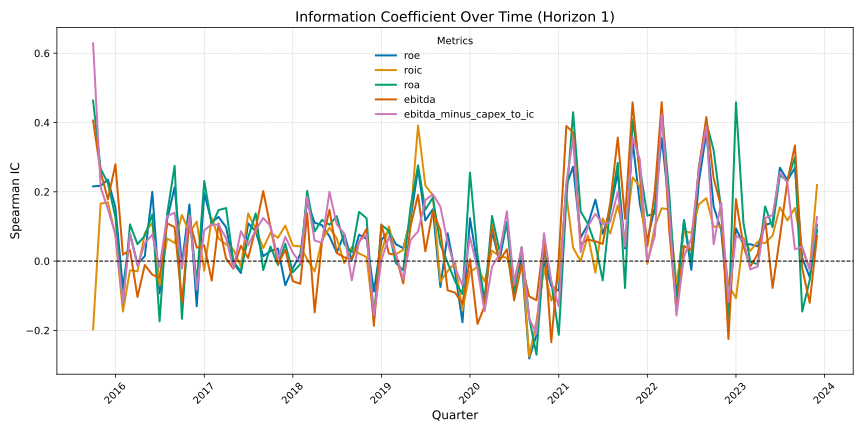
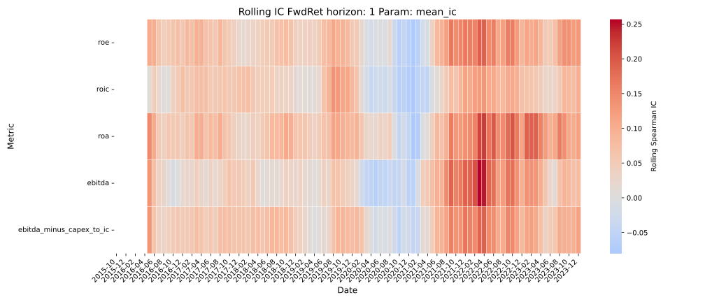
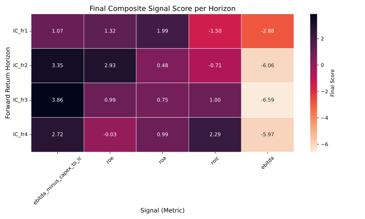

Quant Signal Evaluation Framework
1 Objective
This report outlines a systematic framework to evaluate and select fundamental equity signals with forward-looking return predictive power over short- to mid-term horizons (e.g., 20–60 trading days).
The goal is to: - Identify signals that are both predictive and stable - Combine cross-sectional and time-series diagnostics into a unified, interpretable composite score - Rank signals across multiple horizons for use in systematic equity strategies
2 Data & Preprocessing
We use quarterly Compustat fundamentals, linked to daily CRSP price and return data. Preprocessing includes: - Linking gvkey and permno via ccmxpf_linktable - Forward-filling metrics by report date (rdq) - Filtering to mid-cap stocks (interquartile range of market cap) - Calculating forward returns (fr1, fr2, fr3, fr4) aligned to earnings dates
3 1. Forward-Looking IC Computation
For each signal and return horizon, we compute the Information Coefficient (IC) as the Spearman rank correlation between the signal value and forward return.
Computed per signal and horizon: - mean_ic: Average IC across all months - std_ic: Standard deviation of IC - ic_sharpe: Ratio of mean_ic / std_ic - t_stat: IC t-statistic (adjusted for sample size)
📈 Visualization:
Time-series of Spearman Information Coefficient (IC) for each signal at forward return horizon 1.
This line plot highlights the evolving predictive power of each metric across time.
Sustained values above the zero line suggest stable and directional relationships with future returns, while fluctuations indicate changing signal relevance.

4 2. Rolling IC Diagnostics
We compute rolling window statistics (e.g., 8 quarters) to assess local IC behavior over time:
rolling_mean_icrolling_ic_stdrolling_ic_sharperolling_t_stat
These help detect regime sensitivity or performance decay.
📊 Visualization:
Rolling Spearman IC (mean) across time and signals for forward return horizon 1.
Each cell shows the average IC of a signal over a rolling window, highlighting periods of signal strength or weakness.
Redder regions indicate stronger positive association with future returns; blue indicates weak or negative association.

5 3. Regime Stability: Non-Overlapping Metrics
To quantify regime-level consistency, we compute non-overlapping window metrics:
pct_pos_windows: Fraction of windows with positive ICsign_flips: Number of sign changes in mean IC across windows
This avoids the autocorrelation bias of overlapping windows.
6 4. Full-Period Stability Score
We compute a cross-sectional stability score for each signal using a fixed set of z-scored components:
\[ \text{Stability Score} = z(\text{IC Sharpe}) + z(\text{t-stat}) + z(\%\text{pos}) - z(\text{sign flips}) - z(\text{IC std}) \]
If any component has negligible variance across signals, its contribution is set to zero to preserve comparability across horizons.
This approach balances signal strength and directional consistency while avoiding instability from uninformative metrics.
7 5. Rolling Stability Score
We also assess volatility of performance over time via standard deviation of the rolling statistics:
std(rolling_mean_ic)std(rolling_ic_sharpe)std(rolling_t_stat)
These are combined into a rolling stability score (z-score based, negatively weighted).
8 6. Final Composite Score
To account for both static and dynamic characteristics of signal behavior, we then compute a final composite score by blending the cross-sectional stability score with a rolling stability component:
\[ \text{Final Score} = \alpha \cdot \text{Stability Score} + (1 - \alpha) \cdot \text{Rolling Stability Score} \]
where \(\alpha = 0.65\) by default. The rolling stability score is computed per horizon by aggregating the standard deviations of time-varying signal performance metrics (e.g., IC mean, IC Sharpe, t-stat) and applying a z-scored penalty. This ensures that signals are rewarded not only for being stable across the full sample, but also for being locally stable within rolling windows.
All signals are then ranked by their final scores to support selection and filtering.
📊 Visualization:
Final Composite Signal Scores Across Forward Return Horizons
Each cell shows the composite score of a signal at a given horizon, combining both cross-sectional and rolling stability components.
Higher values indicate signals that are more consistently predictive and robust across time.
Signals are ordered by their average score across all horizons.

9 7. Signal Ranking & Selection
Signals are ranked by their average final score across horizons, with optional filtering rules:
| Metric | Threshold |
|---|---|
| IC Sharpe | ≥ 0.4 |
| IC t-stat | ≥ 2.0 |
| % Positive Windows | ≥ 60% |
| Sign Flips | ≤ 2 |
📋 Suggested Output:
Table of top 3 signals across all horizons
10 Conclusion
This framework enables robust selection of alpha signals by integrating both predictive power and stability diagnostics. It is designed to: - Be transparent and interpretable - Minimize overfitting by penalizing unstable signals - Align with institutional standards for factor research
🔄 Possible Extensions: - Export enriched summary_stats to CSV - Add out-of-sample validation (e.g., walk-forward IC testing) - Integrate portfolio simulation or risk-adjusted return metrics